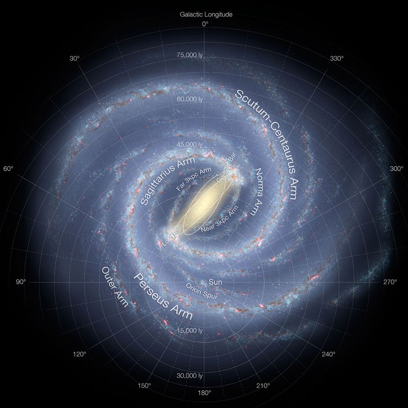
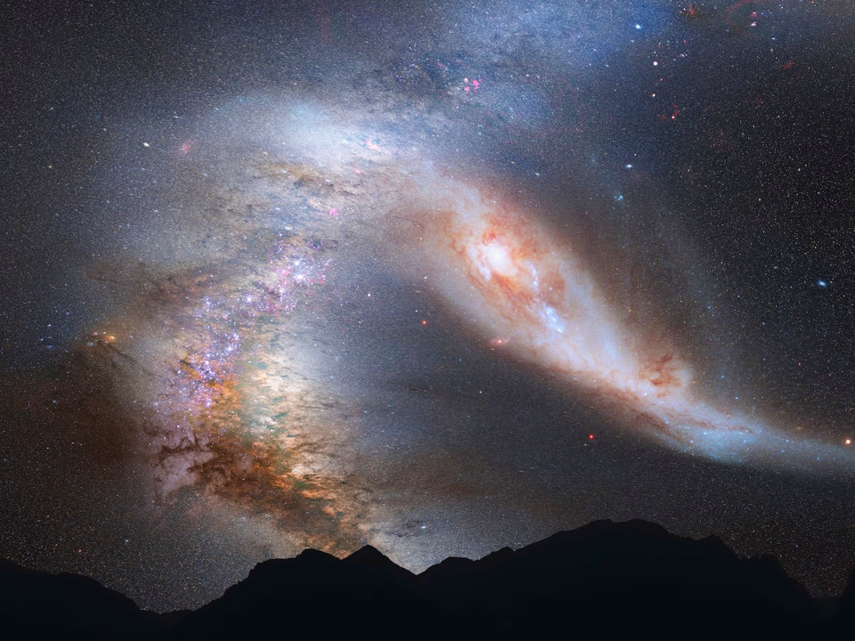

(2025/03/16)
銀河系の概要
太陽系が属している恒星の集団です。
地球が太陽の周りをまわるように太陽系も銀河内を2億5000万年かけて一周します。
銀河系の構造

（イメージ：NASA/JPL-Caltech/ESO/R. Hurt）
円盤状の形をしていて、中央にはバルジと呼ばれる楕円体があります。
比較的古い恒星が集まり、この中心には超巨大ブラックホールがあります。
直径：約10万5000光年
銀河の中心から太陽系までの距離：約2万6000光年
バルジの厚み：約1万5000光年
銀河内では星が多く集まる部分とそうでない部分があります。多い部分を腕と呼んでいます。
天の川銀河には次のような腕があります。
- じょうぎ腕
- ペルセウス腕
- オリオン腕
- いて腕
- たて・みなみじゅうじ腕
天の川銀河の周辺
宇宙には銀河が非常に多く存在していますが銀河が単体で存在しているわけではありません。
銀河の周りには球状星団がありその周りをハローが囲んでいます。
球状星団とハロー
天の川銀河中心から15万光年までにまばらに存在している球状星団の集まりのことです。
銀河円盤よりもハローの方が質量が多いといわれています。
銀河群と銀河団
銀河同士は非常に強い重力によって違いにひきつけあいます。
集まれば集まるほど周りの銀河を引っ張るようになります。その結果できるのが銀河群です。
特に決まりはありませんが50個までの銀河の集まりが銀河群でそれ以上の集まりが銀河団
と呼ばれます。天の川銀河はおとめ座超銀河団に属しています。
銀河が同じところに集まるということは逆に一切銀河がない場所というものが生まれます。そのような場所をボイドといいます。
ボイドには周りに一切恒星がないため真っ暗です。
この様に多くの銀河が連なる部分と何もない空洞から泡構造と呼ばれています。
宇宙豆知識(天の川銀河とアンドロメダ銀河が衝突する！？)

（イメージ：NASA, ESA, Z. Levay and R. van der Marel (STScI), T. Hallas, and A. Mellinger）
天の川銀河から約250万光年先にある直径が約22万光年のアンドロメダ銀河は青方偏位(※光のドップラー効果)していて天の川銀河へ秒速122kmで接近しています。
約40億年後には太陽系と衝突、それから20億年後には一つの巨大な銀河になるとされています。
太陽の寿命が残り50億年とされているので衝突時も太陽系はまだ存在しているでしょう。ただしそのころには赤色巨星となっているため地球には住めませんが。
銀河同士の衝突とは言っても恒星同士の距離は非常に遠いため恒星同士の衝突はほぼありません。ただし重力によって銀河からはじき出されることはあるようです。